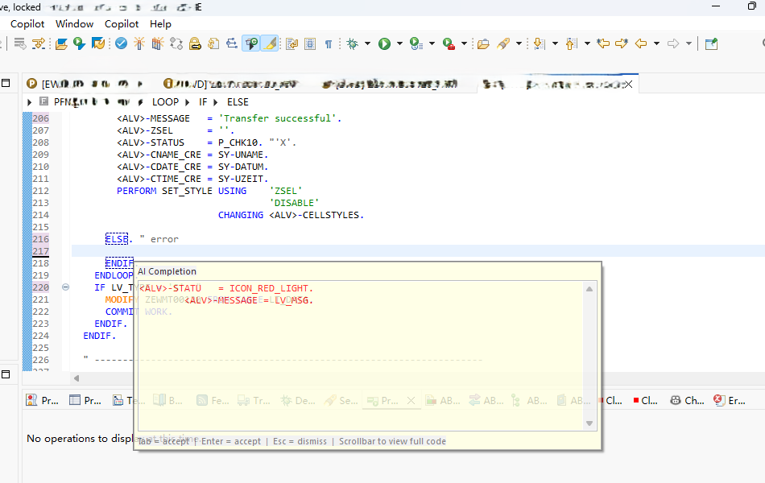
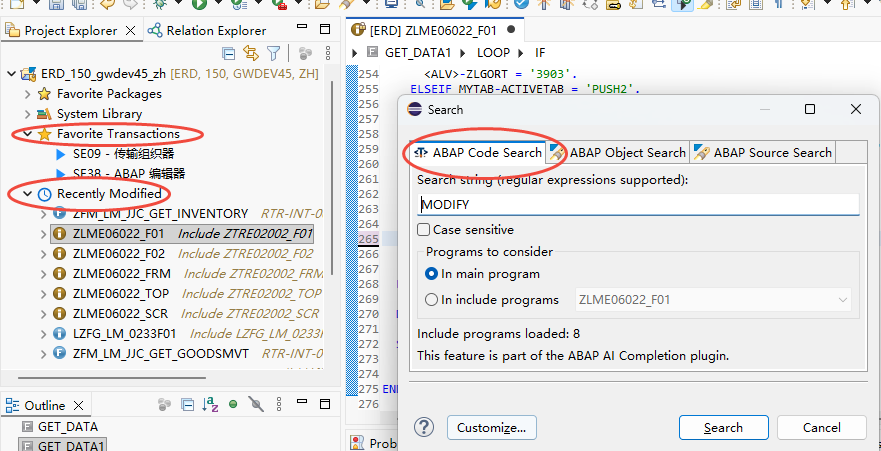

Open Install New Software
In the Eclipse menu bar, choose Help > Install New Software...
Install the plugin from the Eclipse Marketplace, configure an AI connection, then press a shortcut in the ABAP editor to get suggestions — follow the steps below in order.
This plugin is an enhancement layer on top of SAP ABAP Development Tools (ABAP ADT): completion, favorite transactions, recently modified objects, and code search all rely on ADT's ABAP editors and project tree.
If Eclipse does not have ABAP ADT yet, install ADT and connect it to your SAP system first. Without ADT there is no ABAP editor or project tree entry point, and the plugin cannot work properly.
In the Eclipse menu bar, choose Help > Install New Software...
Enter the following URL in the Work with field and press Enter:
https://tools.hana.ondemand.com/latest
Check ABAP Development Tools (and its required components), click Next, accept the license agreement, then click Finish.
Restart Eclipse after installation. Then create or open an ABAP project in ADT and connect to your SAP system. Confirm that you can open and edit ABAP programs — ADT is now ready.
Search for and install the plugin through the Eclipse Marketplace. No manual JAR download is needed.
In the Eclipse menu bar, choose Help > Eclipse Marketplace...
Type ABAP AI Completion in the search box and find the entry with the same name.
Click Install and follow the wizard: confirm the items, accept the license agreement, and trust the certificate if prompted.
When installation finishes, choose Restart Now. The plugin is loaded after Eclipse restarts.
After restarting, open Window > Preferences. ABAP AI Completion should appear on the left, which means the plugin loaded correctly.
The plugin ships with a built-in connection named FREE_AI. For first use you only need to paste the API key you created.
Open https://platform.agnes-ai.com/login, create a new account, and sign in.
Go to https://platform.agnes-ai.com/settings/apiKeys, create a new API key, and copy the resulting sk... string.
In Eclipse, open Window > Preferences > ABAP AI Completion > AI Connections.
Select FREE_AI in the connection list on the left, then paste the key from the previous step into the API Key field on the right.
Click Apply and Close. Keep the connection name, Base URL, and model at their defaults.
An API key is an account credential. Do not share it in screenshots or commit it to a code repository. Eclipse masks the value, but you should still use it only in your own working environment.
Once configured, open an ABAP program you are editing, place the cursor where you need a code suggestion — for example, press Enter after ELSE. — then press Ctrl+Shift+..

The default shortcut is Ctrl + Shift + .. If it conflicts with another tool, rebind it under Window > Preferences > General > Keys by searching for “ABAP AI completion”.
Besides AI completion, the plugin adds three practical extensions to the ADT project tree and search.
Keep frequently used SAP transaction codes in the ADT project tree and execute them with a click, without typing the code every time.
Recently saved ABAP objects are grouped at the top of the project tree, so you can quickly return to the program you just changed.
SE38-style cross-program search that also finds and replaces inside INCLUDEs under the main program — more useful than ADT's current-program-only search.

Make sure Eclipse has been restarted and that you are on Eclipse 4.7+ with Java 17+. If it still does not appear, open Help > Eclipse Marketplace... again and confirm the plugin is listed as installed.
Check each item: the current editor is an ABAP source file in ADT; the AI connection has an API key and Apply was clicked; the network can reach the AI service. You can also click Test Connection on the AI Connections page to verify the configuration.
You can install it, but it will not work properly. Install ABAP ADT in Eclipse and connect it to your SAP system first, then install this plugin and configure the AI connection.
This node records ABAP objects that were saved after the plugin was installed. It is normal for it to be empty on first use — save an ABAP program and it will appear.